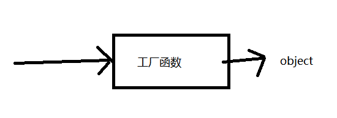
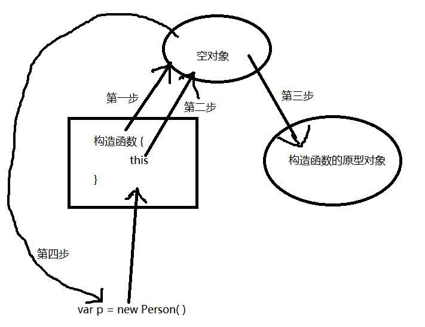

//工厂函数
function createPerson(name,sex){
sex = sex == '男' ? '女' : sex // '加工'
return {
name:name,
sex:sex
};
}
var p =createPerson('张三','男');
这种操作在需要创建多个相似对象时可以有效地减少重复代码，但是这样有个缺点就是，每次调用工厂函数创建的对象都是独立的object，不存在继承关系，显然，这样的面向对象编程失去了灵魂
于是, 对象构造函数就出现了
//构造函数
function Person(name,sex){ //注意:构造函数函数名首字母要大写, 用以区别普通函数
this.name = name;
this.sex = sex
}
var p = new Person('张三','男');使用构造函数有几个要注意的点
1．构造函数创建的对象的constructor对象引用的是该构造函数, 即
p.constructor === Person //true
2．在调用构造函数时要使用new关键字，在使用了new关键字后，内部进行了四个步骤：
- 构造函数创建一个空对象
- 构造函数里的this指向该空对象
- 空对象的内部原型指向构造函数的原型对象
- 构造函数执行完之后, 如果没有return的话, 就把该空对象返回
